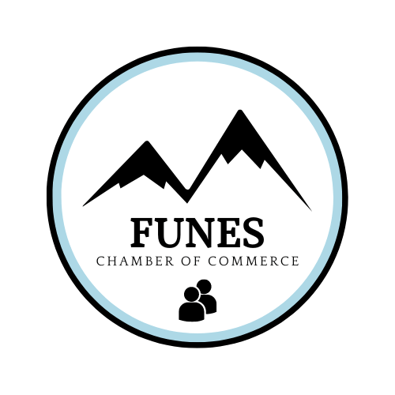

Logo for Funes Chamber of Commerce

Site Purpose
Some of the purposes of the website:
- Be a place where members of the Chamber can see the list of upcoming events or agenda.
- Provide information to the General Public about what the Chamber does, and what it is.
- Be a recruiting tool, contact point for people opening new business in the Funes area.
- Share news related to business, about what's happening in Funes and how that affects the business.